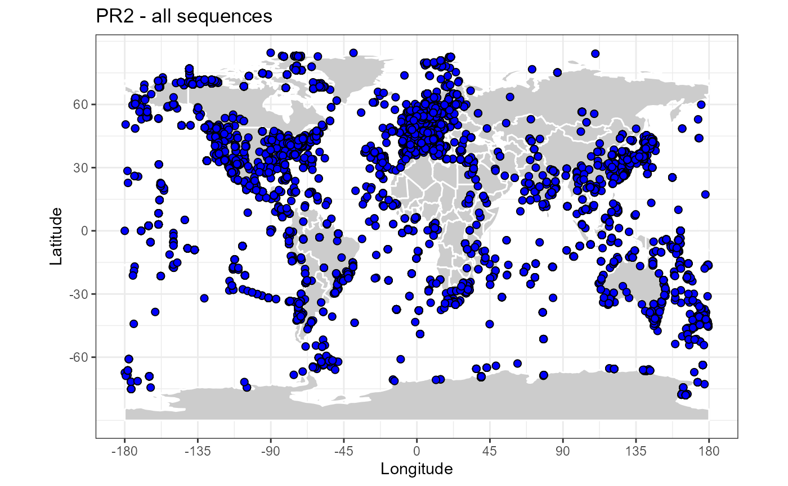

PR2 statistics
Daniel Vaulot
pr2_stats.Rmd
library("ggplot2")
library("dplyr")
library("treemap")
library("knitr")
library("forcats")
library("stringr")
library("rworldmap")
library("treemapify")
library("pr2database")
data(pr2)
packageVersion("pr2database")
#> [1] '4.13.0'
pr2_photo <- pr2 %>% filter((division %in% c("Chlorophyta", "Dinophyta", "Cryptophyta",
"Haptophyta", "Ochrophyta")) &
!(class %in% c("Syndiniales", "Sarcomonadea")))
pr2_ref <- pr2 %>% filter(!is.na(reference_sequence))PR2 fields
colnames(pr2)
#> [1] "pr2_accession" "kingdom"
#> [3] "supergroup" "division"
#> [5] "class" "order"
#> [7] "family" "genus"
#> [9] "species" "genbank_accession"
#> [11] "start" "end"
#> [13] "label" "gene"
#> [15] "organelle" "reference_sequence"
#> [17] "added_version" "edited_version"
#> [19] "edited_by" "edited_remark"
#> [21] "remark" "seq_id"
#> [23] "sequence" "sequence_length"
#> [25] "ambiguities" "sequence_hash"
#> [27] "gb_date" "gb_definition"
#> [29] "gb_organism" "gb_organelle"
#> [31] "gb_taxonomy" "gb_strain"
#> [33] "gb_culture_collection" "gb_clone"
#> [35] "gb_isolate" "gb_isolation_source"
#> [37] "gb_specimen_voucher" "gb_host"
#> [39] "gb_collection_date" "gb_environmental_sample"
#> [41] "gb_country" "gb_lat_lon"
#> [43] "gb_collected_by" "gb_note"
#> [45] "gb_sequence" "gb_publication"
#> [47] "gb_authors" "gb_journal"
#> [49] "eukref_name" "eukref_source"
#> [51] "eukref_env_material" "eukref_env_biome"
#> [53] "eukref_biotic_relationship" "eukref_specific_host"
#> [55] "eukref_geo_loc_name" "eukref_notes"
#> [57] "pr2_sample_type" "pr2_sample_method"
#> [59] "pr2_latitude" "pr2_longitude"
#> [61] "pr2_depth" "pr2_ocean"
#> [63] "pr2_sea" "pr2_sea_lat"
#> [65] "pr2_sea_lon" "pr2_country"
#> [67] "pr2_location" "pr2_location_geoname"
#> [69] "pr2_location_geotype" "pr2_location_lat"
#> [71] "pr2_location_lon" "pr2_sequence_origin"
#> [73] "metadata_remark" "pr2_continent"
#> [75] "pr2_country_geocode" "pr2_country_lat"
#> [77] "pr2_country_lon" "silva_taxonomy"Basic statistics
All taxa
Total number of PR2 sequences : 184785
pr2_taxa <- pr2 %>% select(kingdom:genus, species) %>% summarise_all(funs(n_distinct(.)))
knitr::kable(pr2_taxa, caption="Number of taxa - all sequences")| kingdom | supergroup | division | class | order | family | genus | species |
|---|---|---|---|---|---|---|---|
| 2 | 12 | 44 | 253 | 568 | 1345 | 22538 | 45472 |
Photosynthetic protists
Number of photosynthetic protist sequences : 21184
pr2_taxa <- pr2_photo %>% select(kingdom:genus, species) %>% summarise_all(funs(n_distinct(.)))
knitr::kable(pr2_taxa, caption="Number of taxa - photosynthetic protist sequences")| kingdom | supergroup | division | class | order | family | genus | species |
|---|---|---|---|---|---|---|---|
| 1 | 3 | 4 | 46 | 84 | 144 | 990 | 2952 |
Reference sequences
Reference sequences are a subset of PR2 representative of taxonomic groups.
Number of reference sequences : 23628
pr2_taxa <- pr2_ref %>% select(kingdom:genus, species) %>% summarise_all(funs(n_distinct(.)))
knitr::kable(pr2_taxa, caption="Number of taxa - Reference sequences")| kingdom | supergroup | division | class | order | family | genus | species |
|---|---|---|---|---|---|---|---|
| 1 | 10 | 38 | 204 | 452 | 1108 | 8681 | 13378 |
Sequence length
ggplot(pr2) + geom_histogram(aes(sequence_length), binwidth = 100, fill="blue") +
xlim(0,3000) + xlab("PR2 sequence length") + ylab("Number of sequences") + ggtitle("All sequences")
ggplot(pr2_ref) + geom_histogram(aes(sequence_length), binwidth = 100, fill="blue") +
xlim(0,3000) + xlab("PR2 sequence length") + ylab("Number of sequences") + ggtitle("Reference sequences")
Taxonomic composition
pr2_treemap <- function(pr2, level1, level2) {
# Group
pr2_class <- pr2 %>%
count({{level1}},{{level2}}) %>%
filter(!is.na(division)) %>%
ungroup()
# Do a treemap
ggplot(pr2_class, aes(area = n, fill = {{level2}}, subgroup = {{level1}}, label = {{level2}})) +
treemapify::geom_treemap()
ggplot(pr2_class, aes(area = n, fill= {{level1}}, subgroup = {{level1}}, label = {{level2}})) +
treemapify::geom_treemap() +
treemapify::geom_treemap_text(colour = "white", place = "centre", grow = TRUE) +
treemapify::geom_treemap_subgroup_border() +
treemapify::geom_treemap_subgroup_text(place = "centre", grow = T,
alpha = 0.5, colour = "black",
min.size = 0) +
theme_bw() +
scale_color_brewer() +
guides(fill = FALSE)
}

Genera most represented
All taxa
pr2_genus <- pr2 %>% group_by(class, genus) %>% count() %>% ungroup() %>% top_n(30)
ggplot(pr2_genus) +
geom_col(aes(x=forcats::fct_reorder(stringr::str_c(class,"-",genus), n), y=n)) +
coord_flip() +
ggtitle("Most represented genera - all") +
xlab("Genera") + ylab("Number of sequences")
Only photosynthetic protists
pr2_genus <- pr2_photo %>% group_by(class, genus) %>% count() %>% ungroup() %>% top_n(30)
ggplot(pr2_genus) +
geom_col(aes(x=forcats::fct_reorder(stringr::str_c(class,"-",genus), n), y=n)) +
coord_flip() +
ggtitle("Most represented genera - only photosynthetic protists") +
xlab("Genera") + ylab("Number of sequences")World sequence distribution
map_get_world <- function(resolution="coarse"){
worldMap <- rworldmap::getMap(resolution = resolution) # Change to "coarse" for global maps / "low" for regional maps
world.points <- fortify(worldMap)
world.points$region <- world.points$id
world.df <- world.points[,c("long","lat","group", "region")]
}
map_world <- function(color_continents = "grey80", color_borders = "white", resolution = "coarse") {
# Background map using the maps package
# world.df <- map_data("world")
world.df <- map_get_world(resolution)
map <- ggplot() +
geom_polygon(data = world.df, aes(x=long, y = lat, group = group), fill=color_continents, color=color_borders) +
# scale_fill_manual(values= color_continents , guide = FALSE) +
scale_x_continuous(breaks = (-4:4) * 45) +
scale_y_continuous(breaks = (-2:2) * 30) +
xlab("Longitude") + ylab("Latitude") +
coord_fixed(1.3) +
theme_bw()
# species_map <- species_map + coord_map () # Mercator projection
# species_map <- species_map + coord_map("gilbert") # Nice for the poles
return(map)
}All taxa
map_world() + geom_point(data=pr2, aes(x=pr2_longitude, y=pr2_latitude), fill="blue", size=2, shape=21) +
ggtitle("PR2 - all sequences") 
Photosynthetic protists
map_world() + geom_point(data=pr2_photo, aes(x=pr2_longitude, y=pr2_latitude), fill="red", size=2, shape=21) +
ggtitle("PR2 - photosynthetic protists sequences")